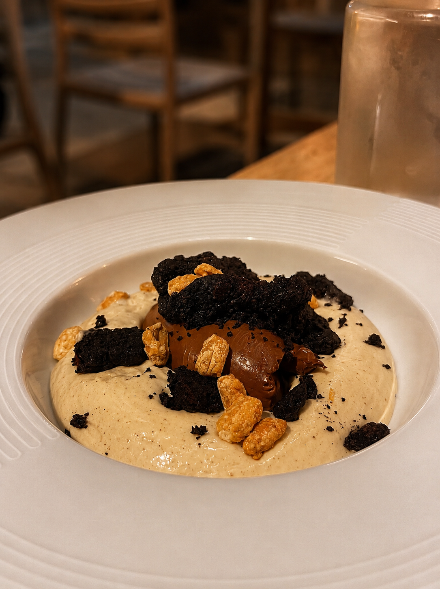
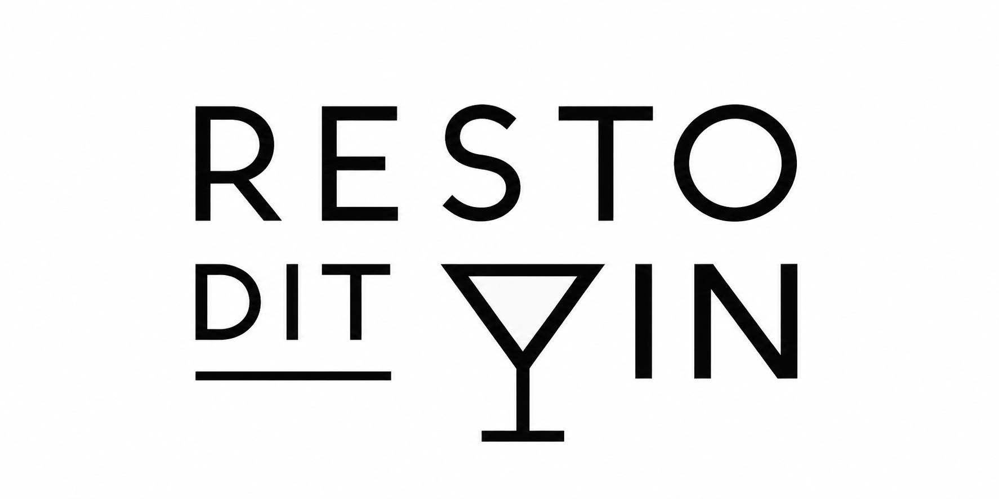
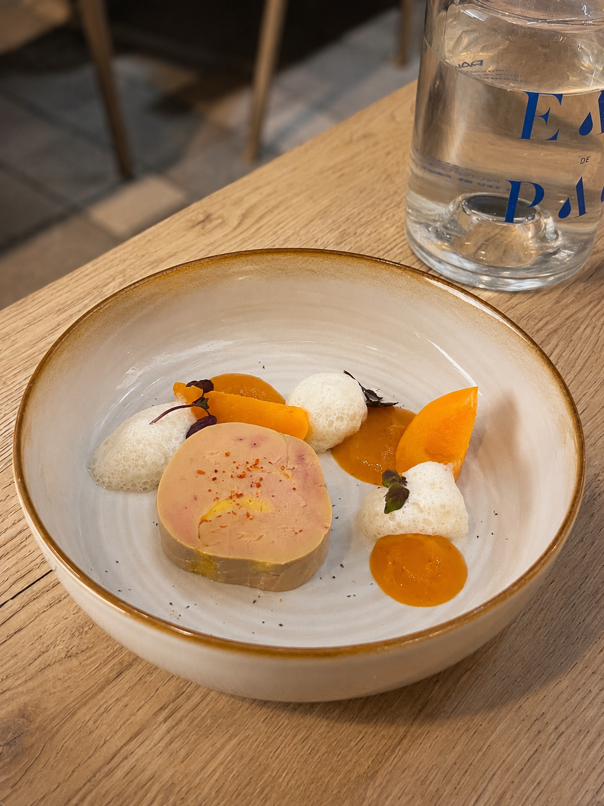
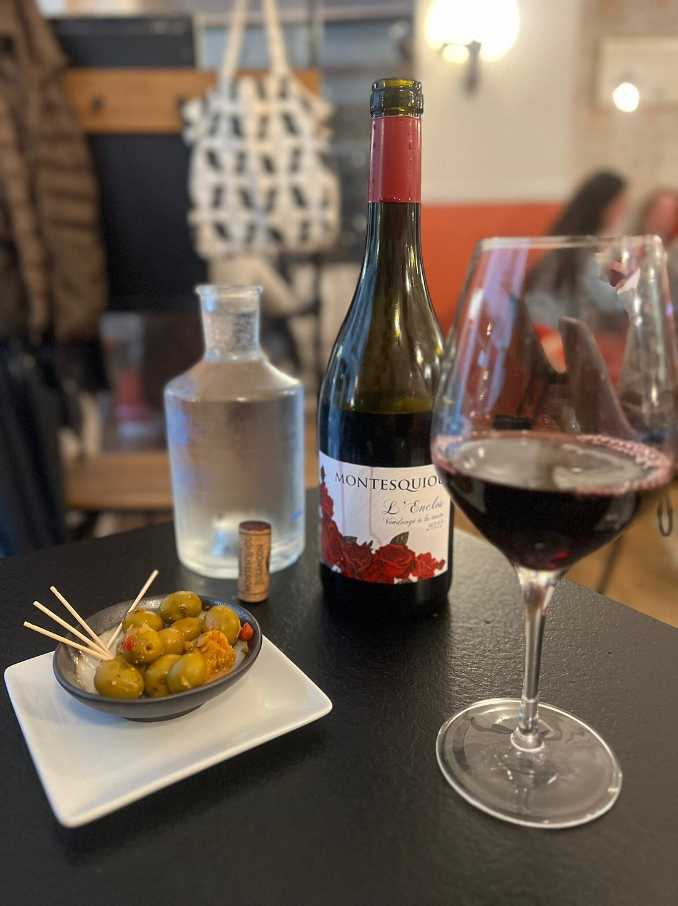
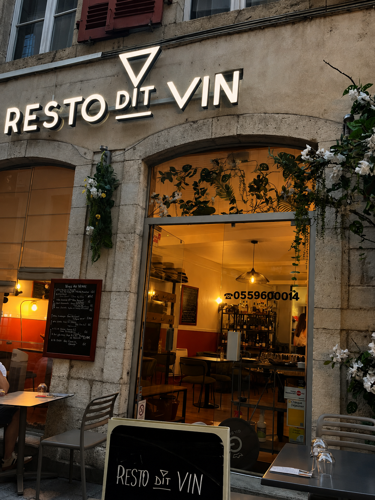

01 — La terre
Des produits qui ont une adresse.
Des légumes cultivés localement, des produits choisis au plus près du territoire et une carte qui accepte de changer.

Pau · Béarn
Cuisine de saison, produits d’ici et vins choisis avec passion.

À Pau, Resto Dit Vin construit une cuisine courte, vivante et de saison, portée par les producteurs, les arrivages et le goût juste.
Des bouteilles choisies comme les produits de la cuisine : pour ceux qui les font et pour ce qu’elles racontent.

Resto Dit Vin vit par les personnes qui cuisinent, servent, cultivent et choisissent les bouteilles. Le site doit les montrer sans transformer l’adresse en storytelling artificiel.

Une table à Pau, quelques produits d’ici et une bouteille bien choisie.
Réserver une table